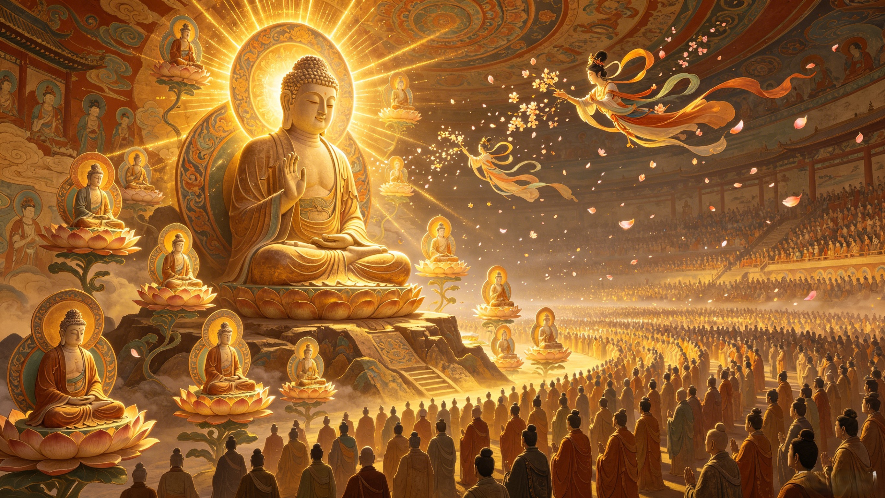

The Teachings
The 81 tribulations were not random obstacles. Every demon, every disaster, every moment of despair on the road west was a carefully designed lesson — the Buddha's masterpiece of spiritual pedagogy.
No demon in Journey to the West attacks randomly. Every monster the pilgrims face is paying a karmic debt — the Azure Lion was a bodhisattva's escaped mount, the Scorpion Demoness was a celestial being who stung the Buddha himself, the Goldfish was Guanyin's pet who escaped to terrorize a river. Every obstacle is karma manifesting — and every resolution restores cosmic balance. The pilgrims are not just travelers; they are walking instruments of karmic resolution. And here is the deepest teaching: even the pilgrims themselves are working off their own past misdeeds. Sun Wukong's rebellion, Zhu Bajie's lust, Sha Wujing's violence — the journey purifies them all.
The Buddha's most famous demonstration — the palm that Sun Wukong could not escape — is perhaps the greatest teaching of śūnyatā (emptiness) in all of literature. The palm is both infinitely large (containing the entire cosmos) and infinitely small (fitting in one hand). This is the Mahayana understanding of emptiness: form is emptiness, emptiness is form. The Buddha does not need to act because, from the perspective of enlightenment, there is nothing to act upon and no one to act. The entire universe is already held within the awakened mind.
The Buddha's method in Journey to the West exemplifies upāya — skillful means. He could have simply teleported the scriptures to China. Instead, he designed a 14-year journey that would transform every pilgrim along the way. He does not give answers — he creates situations that produce understanding. The 81 tribulations are not tests with right and wrong answers. They are experiences designed to cultivate wisdom — the way a gardener cultivates flowers, never forcing the bloom, only providing the conditions.
The five pilgrims — Tang Sanzang, Sun Wukong, Zhu Bajie, Sha Wujing, and the White Dragon Horse — could not have completed the journey alone. Sanzang had faith but no strength. Wukong had strength but no patience. Bajie had warmth but no discipline. Sha Wujing had discipline but no initiative. The dragon had sacrifice but no voice. Only together did they form a complete being — each one's weakness covered by another's strength. This is dependent origination in narrative form: nothing exists independently. Everything is relation. The journey itself is the proof.
At the deepest level, the Journey to the West is a story about bodhicitta — the awakened heart, the vow to achieve enlightenment for the benefit of all beings. Tang Sanzang's pilgrimage was not for personal salvation but to bring scriptures back to China, to liberate the suffering souls of the eastern land. Every pilgrim who joins him is making the same bodhisattva vow in their own way. And the Buddha himself — the fully awakened one who could rest in eternal peace — chooses to engage with the messy, suffering world, designing a 14-year journey for five flawed beings. Because enlightenment is not an escape from the world. It is the deepest possible engagement with it.
In Buddhist numerology, 81 is 9 × 9 — the number of completion squared. Nine is the highest single digit, the number of heaven. Multiplied by itself, it represents absolute completion — a journey so thorough that nothing is left unresolved. The scriptures specify that the pilgrims must face exactly 81 tribulations. When they count only 80 at the journey's end, the Buddha dispatches one final obstacle — the great turtle who carries them across the Heavenly River before dumping the scriptures into the water. Because the journey cannot end until every last debt is paid. The number is not symbolic. It is law.
Dive Deeper